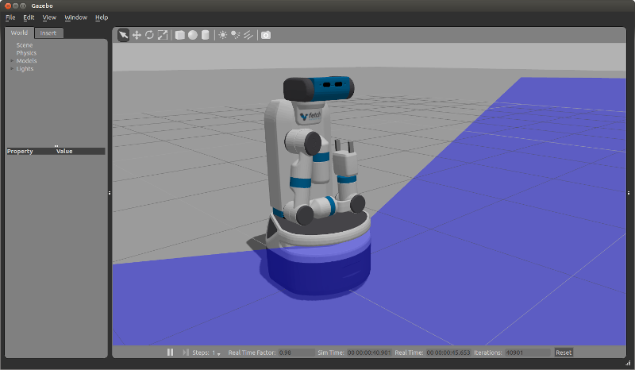
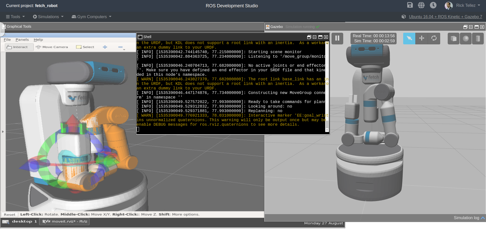
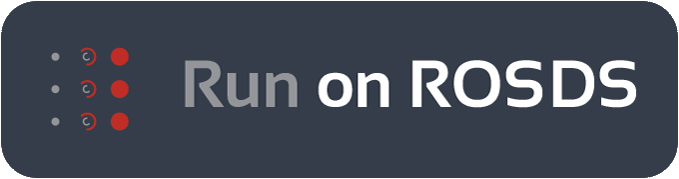

Tutorial: Gazebo Simulation
Fetch and Freight have simulated counterparts using the Gazebo Simulator which you can install locally on your system.
The Construct Sim provides a way to simulate a Fetch in Gazebo via their cloud service using a single ROSJect link in case you want to avoid the installation process.
Installation
Before installing the simulation environment, make sure your desktop is setup with a standard installation of ROS Indigo on Ubuntu 14.04 or ROS Melodic on Ubuntu 18.04. Once your APT repositories are configured, you can install the simulator:
>$ sudo apt-get update
>$ sudo apt-get install ros-$ROS_DISTRO-fetch-gazebo-demo
Starting the Simulator
Warning
Never run the simulator on the robot. Simulation requires that the ROS parameter use_sim_time be set to true, which will cause the robot drivers to stop working correctly. In addition, be sure to never start the simulator in a terminal that has the ROS_MASTER_URI set to your robot for the same reasons.
The fetch_gazebo and fetch_gazebo_demo packages provide the Gazebo
environment for Fetch. fetch_gazebo includes several launch files:
simulation.launch spawns a robot in an empty world.
playground.launch spawns a robot inside a lab-like test environment. This environment has some tables with items that may be picked up and manipulated. It also has a pre-made map which can be used to test out robot navigation and some simple demonstrations of object grasping.
To start the simplest environment:
>$ roslaunch fetch_gazebo simulation.launch
{kind=link}

Note that all of the environments will prepare the robot by tucking the arm and giving the head an initial command.
Simulating a Freight
Freight uses the same launch files as Fetch, simply pass the robot argument:
>$ roslaunch fetch_gazebo simulation.launch robot:=freight
Visualizing with RVIZ
Even though Gazebo has a graphical visualization, RVIZ is still the preferred tool for interacting with your robot.
>$ export ROS_MASTER_URI=http://<robot_name_or_ip>:11311
>$ rosrun rviz rviz

Note
You will need a computer with ROS installed to properly communicate with the robot. Please consult the ROS Wiki for more information. We strongly suggest an Ubuntu machine with ROS Noetic installed.
You can now manually set up your RVIZ visualization
or re-run RVIZ with a configuration file using the command line.
The default .rviz configuration file for Fetch can be loaded using:
>$ roscd fetch_navigation/config
>$ export ROS_MASTER_URI=http://<robot_name_or_ip>:11311
>$ rviz -d navigation.rviz

Running the Mobile Manipulation Demo
There is a fully integrated demo showing navigation, perception and MoveIt working together on the robot in simulation. To run the demo, start Gazebo simulator with the playground:
>$ roslaunch fetch_gazebo playground.launch
Wait until the simulator is fully running and then run the demo launch file:
>$ roslaunch fetch_gazebo_demo demo.launch
This will start:
fetch_nav.launch - this is the navigation stack with a pre-built map of the environment.
move_group.launch - this is the MoveIt configuration which can plan for the movement of the arm.
basic_grasping_perception - this is a simple demo found in the
simple_graspingpackage which segments objects on tables and computes grasps for them.demo.py - this our specific demo which navigates the robot from the starting pose in Gazebo to the table, raises the torso, lowers the head to look at the table, and then runs perception to generate a goal for MoveIt. The arm will then grasp the cube on the table, tuck the arm and lower the torso. Once the robot is back in this tucked configuration, the navigation stack will be once again called to navigate into the room with the countertop where the robot will place the cube on the other table.
Launch it on ROSDS
{kind=link}

As mentioned beforehand, you can run the whole simulation on the ROS Development Studio, by The Construct, with a single click. The advantages include:
No installation required
Any operating system can be used to program Fetch robots with ROS
You can start testing and programming Fetch robots in 30 seconds!
In case you want to try it, you can just press the Run on ROSDS button to start:

Simulation vs. Real Robots
The simulated robot may not be identical to the real robot. In fact, the real robot is likely quite a bit better behaved. Also:
The simulator does not include the IMU. Therefore, there is also no base odometry fusion with IMU data, and the base_controller directly publishes all required TF data directly.
The simulated robot does not have the head_camera/depth/* topics due to limitations within the Gazebo plugins.
The simulated robot arm is not as well tuned as the real robot. The real arm will not wobble the way the simulated arm does when executing a trajectory. The simulated robot has also not been tuned with various payloads. It is best used for examining the workspace of the robot, and not the actual controls-related performance of the arm.
The fingers of the real robot gripper are driven by the same leadscrew, so the object will always be grasped in the center of the gripper. With the simulated robot, the fingers are independently actuated, and so the object may drift to one side.